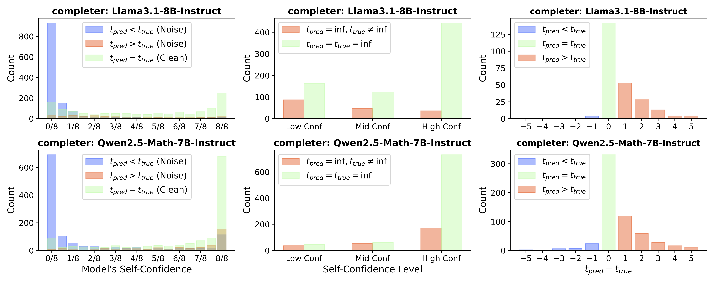

We propose Self-Denoising Monte Carlo Annotation (SCAN),
an efficient Process Reward Model (PRM) data synthesis and noise-tolerant learning framework.
Background
Preliminary Study of Noise Distribution

The above figure illustrates the noise distribution of Monte Carlo Estimation, where \( t_{pred} \) denotes the annotated error location (label), and \( t_{true} \) denotes the ground-truth error location (label).
Here we list an important observations on noise distribution:
Method Overview
Building upon the insights, we propose SCAN framework, consisting of two modules: (1) an efficient data synthesis framework to reduce substantial inference costs, and (2) robust training methods to mitigate the high noise ratio in synthetic data and enable robust learning with noisy labels.
Performance of SCAN
We evaluate the effectiveness of the Process Reward Model (PRM) from two key perspectives:
Best-of-N (BoN) Evaluation: In this evaluation, the PRM functions as a verifier to select the best response from multiple candidate answers generated by a policy model.

Step-wise Error Detection: We use ProcessBench as the evaluation benchmark, which measures the PRM's capability to identify the first error location in a given response.